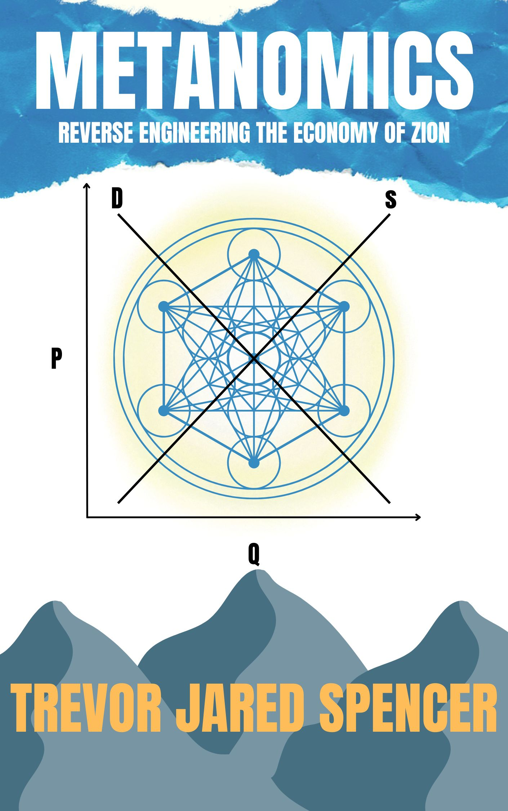

Prophecy meets economics
METANOMICS
REVERSE ENGINEERING THE ECONOMY OF ZION
A groundbreaking synthesis of scripture, prophecy, and economic theory. Metanomics decodes the Return of Jesus timeline — revealing who Metatron is, why All Things in Common powers the New Jerusalem, and how sacred economics defines the Zion society prophesied for the last days.


Download Free E-Book

Get the Free PDF
Enter your details below to receive a free digital copy and join the Remembrance Newsletter.
Follow the Author
Find me everywhere
@metatrev89